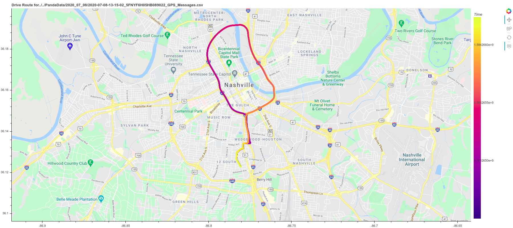
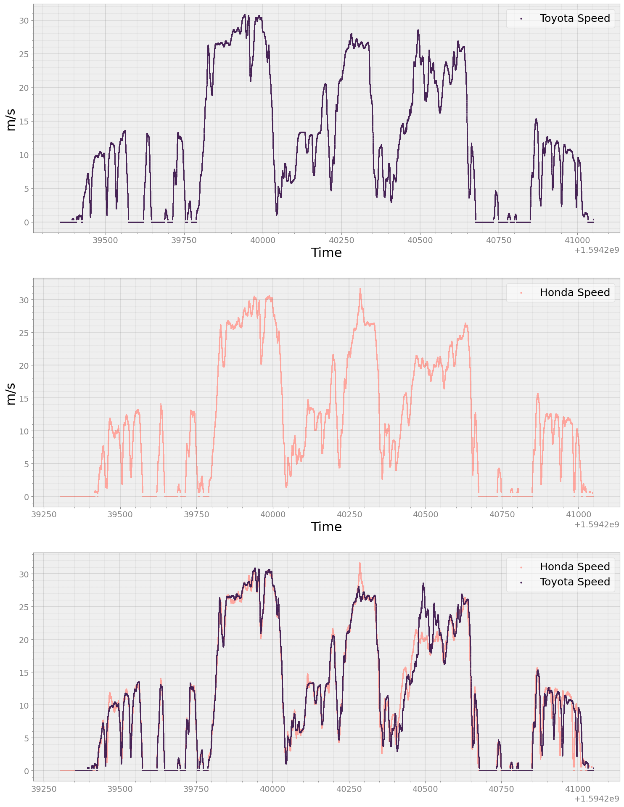
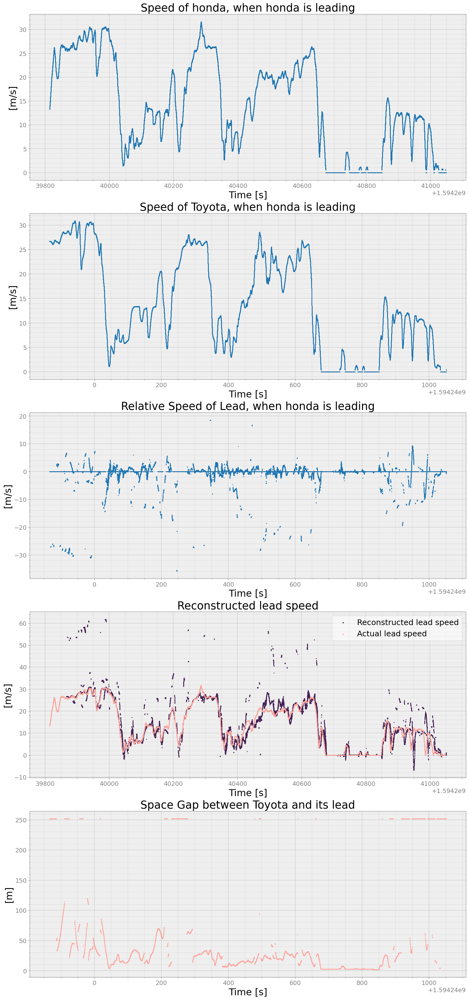
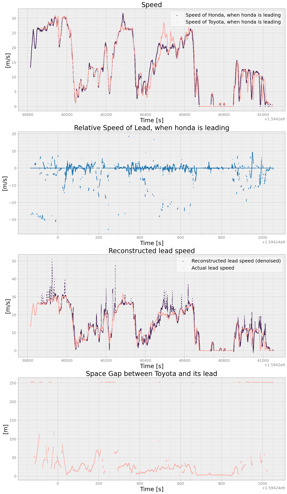
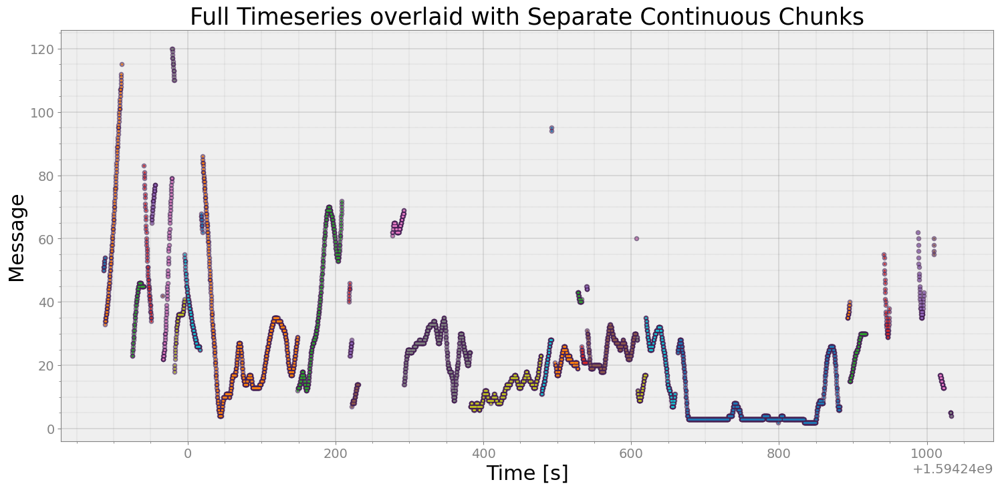
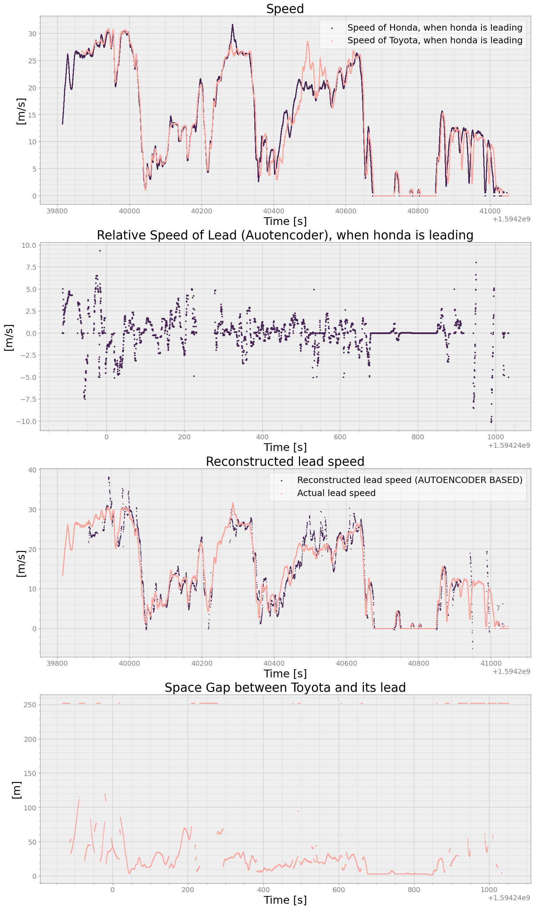
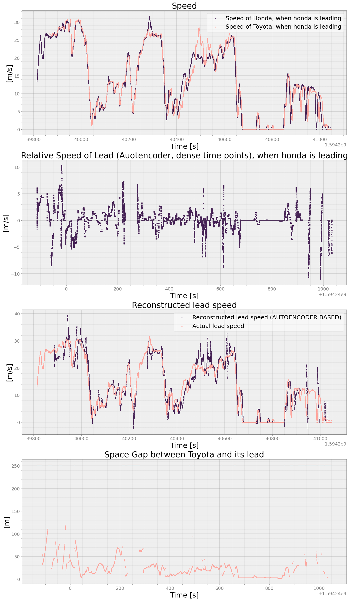

Honda Pilot-RAV4 Test¶
Test Setup: Honda Pilot started following Toyota RAV4 but eventually Honda was leading
In this notebook we measure the speed of Honda vehicle as perceived by Toyota vehicle. Honda was leading after 511 seconds from the experiment. Toyota vehicle could see Honda vehicle and it has LEAD DISTANCE information known to us. Based on this, we reconstructed speed of Honda vehicle as seen by Toyota and compared with the actual speed of Honda vehicle
[1]:
import glob
import numpy as np
import matplotlib.pyplot as plt
import pandas as pd
import strym
from strym import strymread
from strym import strymmap
/home/ivory/anaconda3/envs/dbn/lib/python3.7/site-packages/statsmodels/tools/_testing.py:19: FutureWarning: pandas.util.testing is deprecated. Use the functions in the public API at pandas.testing instead.
import pandas.util.testing as tm
From GPS routes we find that we are only interested in Toyota file 2020-07-08-15-15-54_2T3MWRFVXLW056972 and Honda file 2020-07-08-13-15-02_5FNYF6H05HB089022
[2]:
toyota_dbcfile = '../examples/newToyotacode.dbc'
honda_dbcfile = "../examples/honda_pilot_touring_2017_can_generated.dbc"
folder = '../../PandaData/2020_07_08/'
toyota = "2020-07-08-15-15-54_2T3MWRFVXLW056972"
toyota_can_file = folder + toyota + "_CAN_Messages.csv"
toyota_gps_file = folder + toyota + "_GPS_Messages.csv"
toyota_dashcam_A = folder + toyota + "_dashcamA.mp4"
toyota_dashcam_B = folder + toyota + "_dashcamB.mp4"
honda = "2020-07-08-13-15-02_5FNYF6H05HB089022"
honda_can_file = folder + honda + "_CAN_Messages.csv"
honda_gps_file = folder + honda + "_GPS_Messages.csv"
honda_dashcam = folder + honda + "_dashcam.mp4"
Read the CSV file using strymread¶
[3]:
r_toyota = strymread(csvfile=toyota_can_file, dbcfile=toyota_dbcfile)
r_honda = strymread(csvfile=honda_can_file, dbcfile=honda_dbcfile)
# we will subtract by 7200s = 2hours as Toyota's time was in CDT
r_toyota.dataframe['Time'] = r_toyota.dataframe['Time'] - 7200
Get a map of drive using strymmap¶
[4]:
g_toyota = strymmap(toyota_gps_file)
g_honda = strymmap(honda_gps_file)
GPS signal first acquired at 2020-07-08 20:16:10:100000
Looking for [chromedriver 85.0.4183.87 linux64] driver in cache
File found in cache by path [/home/ivory/.wdm/drivers/chromedriver/85.0.4183.87/linux64/chromedriver]
GPS signal first acquired at 2020-07-08 20:15:02:000000
Looking for [chromedriver 85.0.4183.87 linux64] driver in cache
File found in cache by path [/home/ivory/.wdm/drivers/chromedriver/85.0.4183.87/linux64/chromedriver]
[5]:
g_toyota.plotroute(interactive=False)

[5]:
GMap(
id = '1003', …)
[6]:
g_honda.plotroute(interactive=False)

[6]:
GMap(
id = '1231', …)
Get Counts of each messages from both cars data¶
[8]:
r_honda.count()
[8]:
| MessageID | Counts_Bus_0 | Counts_Bus_1 | Counts_Bus_2 | TotalCount | |
|---|---|---|---|---|---|
| 57 | 57 | 43660 | 99 | 43660 | 87419 |
| 145 | 145 | 174619 | 393 | 174619 | 349631 |
| 228 | 228 | 174614 | 392 | 174614 | 349620 |
| 229 | 229 | 174625 | 393 | 174625 | 349643 |
| 308 | 308 | 174625 | 393 | 174625 | 349643 |
| ... | ... | ... | ... | ... | ... |
| 1612 | 1612 | 1747 | 4 | 1747 | 3498 |
| 1613 | 1613 | 1746 | 4 | 1746 | 3496 |
| 1616 | 1616 | 1747 | 4 | 1747 | 3498 |
| 1618 | 1618 | 1747 | 4 | 1747 | 3498 |
| 1668 | 1668 | 1749 | 4 | 1749 | 3502 |
106 rows × 5 columns
[9]:
r_toyota.count()
[9]:
| MessageID | Counts_Bus_0 | Counts_Bus_1 | TotalCount | |
|---|---|---|---|---|
| 36 | 36 | 130567 | 0 | 130567 |
| 37 | 37 | 130567 | 0 | 130567 |
| 166 | 166 | 130566 | 0 | 130566 |
| 170 | 170 | 130566 | 0 | 130566 |
| 180 | 180 | 65283 | 0 | 65283 |
| ... | ... | ... | ... | ... |
| 1990 | 1990 | 70 | 0 | 70 |
| 1994 | 1994 | 26 | 0 | 26 |
| 1998 | 1998 | 70 | 0 | 70 |
| 2004 | 2004 | 668 | 0 | 668 |
| 2012 | 2012 | 668 | 0 | 668 |
205 rows × 4 columns
Get the speed and convert to m/s¶
[11]:
toyota_speed = r_toyota.speed()
honda_speed = r_honda.get_ts(msg = "WHEEL_SPEEDS", signal="WHEEL_SPEED_FL")
toyota_speed['Message'] = toyota_speed['Message']*0.277778
honda_speed['Message'] = honda_speed['Message']*0.277778
Let’s look at all of the drive data¶
[12]:
fig, ax = strymread.create_fig(3)
ax[0].scatter(x = toyota_speed['Time'], y = toyota_speed['Message'], s = 1, color = "#462255")
ax[1].scatter(x = honda_speed['Time'], y = honda_speed['Message'], s = 1, color = "#FFA69E")
ax[2].scatter(x = honda_speed['Time'], y = honda_speed['Message'], s = 1, color = "#FFA69E")
ax[2].scatter(x = toyota_speed['Time'], y = toyota_speed['Message'], s = 1, color = "#462255")
ax[0].legend(["Toyota Speed"])
ax[0].set_xlabel("Time")
ax[0].set_ylabel("m/s")
ax[1].legend(["Honda Speed"])
ax[1].set_xlabel("Time")
ax[1].set_ylabel("m/s")
ax[2].legend(["Honda Speed", "Toyota Speed"])
plt.show()

Since Honda car started leading after 511 seconds into the experiment, we are gonna clip data before 511 seconds¶
[13]:
honda_speed_lead = honda_speed[(honda_speed['Time'] - honda_speed['Time'].iloc[0] >= 511)]
toyota_speed_l = toyota_speed[(toyota_speed['Time'] - toyota_speed['Time'].iloc[0] >= 511)]
Get the status of lead from Radar traces¶
[14]:
toyota_long_dist = r_toyota.long_dist(np.arange(0, 16))
toyota_lat_dist = r_toyota.lat_dist(np.arange(0, 16))
toyota_rel = r_toyota.rel_velocity(np.arange(0, 16))
# Concatenate long, lat and relative vel of all tracks to a single dataframe
toyota_long_dist = pd.concat(toyota_long_dist)
toyota_lat_dist = pd.concat(toyota_lat_dist)
toyota_rel = pd.concat(toyota_rel)
toyota_long_dist['Long'] = toyota_long_dist['Message']
toyota_long_dist['Lat'] = toyota_lat_dist['Message']
toyota_long_dist['Relvel'] = toyota_rel['Message']
toyota_long_dist.drop(columns=['Message'], inplace=True)
toyota_lead_state = toyota_long_dist
toyota_lead_state
[14]:
| Time | Bus | Long | Lat | Relvel | |
|---|---|---|---|---|---|
| Clock | |||||
| 2020-07-08 22:15:55.252307891 | 1.594239e+09 | 1 | 1.84 | 0.08 | 0.000 |
| 2020-07-08 22:15:55.257261992 | 1.594239e+09 | 1 | 1.84 | 0.08 | 0.000 |
| 2020-07-08 22:15:55.262037992 | 1.594239e+09 | 1 | 1.84 | 0.08 | 0.000 |
| 2020-07-08 22:15:55.266766071 | 1.594239e+09 | 1 | 1.84 | 0.08 | 0.000 |
| 2020-07-08 22:15:55.271398067 | 1.594239e+09 | 1 | 1.84 | 0.08 | 0.000 |
| ... | ... | ... | ... | ... | ... |
| 2020-07-08 22:44:10.787353039 | 1.594241e+09 | 1 | 18.48 | -0.20 | -0.475 |
| 2020-07-08 22:44:10.837707043 | 1.594241e+09 | 1 | 18.48 | -0.20 | -0.600 |
| 2020-07-08 22:44:10.886825085 | 1.594241e+09 | 1 | 18.44 | -0.20 | -0.625 |
| 2020-07-08 22:44:10.937982082 | 1.594241e+09 | 1 | 18.40 | -0.20 | -0.650 |
| 2020-07-08 22:44:10.986700058 | 1.594241e+09 | 1 | 18.36 | -0.20 | -0.675 |
542896 rows × 5 columns
Filter out the toyota_lead_state so that it only contains tracks found by RADAR directly in front of the Toyota. For that we hypothesize that anything with lateral distance less than equal \(\pm\) 0.5 is seen as a car driving in front of the Toyota¶
[15]:
toyota_lead_state = toyota_lead_state[np.abs(toyota_lead_state['Lat']) <= 0.5]
toyota_lead_state
[15]:
| Time | Bus | Long | Lat | Relvel | |
|---|---|---|---|---|---|
| Clock | |||||
| 2020-07-08 22:15:55.252307891 | 1.594239e+09 | 1 | 1.84 | 0.08 | 0.000 |
| 2020-07-08 22:15:55.257261992 | 1.594239e+09 | 1 | 1.84 | 0.08 | 0.000 |
| 2020-07-08 22:15:55.262037992 | 1.594239e+09 | 1 | 1.84 | 0.08 | 0.000 |
| 2020-07-08 22:15:55.266766071 | 1.594239e+09 | 1 | 1.84 | 0.08 | 0.000 |
| 2020-07-08 22:15:55.271398067 | 1.594239e+09 | 1 | 1.84 | 0.08 | 0.000 |
| ... | ... | ... | ... | ... | ... |
| 2020-07-08 22:44:10.787353039 | 1.594241e+09 | 1 | 18.48 | -0.20 | -0.475 |
| 2020-07-08 22:44:10.837707043 | 1.594241e+09 | 1 | 18.48 | -0.20 | -0.600 |
| 2020-07-08 22:44:10.886825085 | 1.594241e+09 | 1 | 18.44 | -0.20 | -0.625 |
| 2020-07-08 22:44:10.937982082 | 1.594241e+09 | 1 | 18.40 | -0.20 | -0.650 |
| 2020-07-08 22:44:10.986700058 | 1.594241e+09 | 1 | 18.36 | -0.20 | -0.675 |
207904 rows × 5 columns
We will also get the filtered lead distance that is readily available from Toyota on Message ID 869¶
[16]:
lead_dist = r_toyota.get_ts(msg=869,signal="LEAD_DISTANCE")
lead_dist_l = lead_dist[(lead_dist['Time'] - lead_dist['Time'].iloc[0] >= 511)]
Remove first 511 seconds from lead state for the reason as mentioned above¶
[17]:
toyota_lead_state_l = toyota_lead_state[(toyota_lead_state['Time'] - toyota_lead_state['Time'].iloc[0] >= 511)]
We also want to resample speed data, and relative velocity data obtained from radar trace so that we can estimate speed of the lead vehicle in front of toyota by adding these two timeseries¶
[19]:
lead_rel = pd.DataFrame()
lead_rel['Time'] = toyota_lead_state_l['Time']
lead_rel['Message'] = toyota_lead_state_l['Relvel']
toyota_speed_resampled, rel_resampled = strymread.ts_sync(toyota_speed_l, lead_rel, rate="second")
Add two timeseries to get estimated speed lead_reoncstructed of Honda¶
[20]:
lead_reoncstructed = pd.DataFrame()
lead_reoncstructed['Time'] = toyota_speed_resampled['Time']
lead_reoncstructed['Message'] = toyota_speed_resampled['Message'] - rel_resampled['Message']
Now, look at the plot of estimated velocity of Honda as perceived by Toyota.¶
[21]:
fig, ax = strymread.create_fig(num_of_subplots=5)
ax[0].scatter(x = 'Time', y = 'Message', data = honda_speed_lead, s= 1)
ax[1].scatter(x = 'Time', y = 'Message', data = toyota_speed_l, s= 1)
ax[2].scatter(x = 'Time', y = 'Relvel', data = toyota_lead_state_l, s= 1)
ax[3].scatter(x = 'Time', y = 'Message', data = lead_reoncstructed, s= 1, color = "#462255")
ax[3].scatter(x = 'Time', y = 'Message', data = honda_speed_lead, s= 1, color = "#FFA69E")
ax[4].scatter(x = 'Time', y = 'Message', data = lead_dist_l, s= 1, color = "#FFA69E")
ax[0].set_title('Speed of honda, when honda is leading')
ax[1].set_title('Speed of Toyota, when honda is leading')
ax[2].set_title('Relative Speed of Lead, when honda is leading')
ax[3].set_title('Reconstructed lead speed')
ax[3].legend(["Reconstructed lead speed", "Actual lead speed"])
ax[4].set_title('Space Gap between Toyota and its lead')
ax[0].set_xlabel('Time [s]')
ax[1].set_xlabel('Time [s]')
ax[2].set_xlabel('Time [s]')
ax[3].set_xlabel('Time [s]')
ax[4].set_xlabel('Time [s]')
ax[0].set_ylabel('[m/s]')
ax[1].set_ylabel('[m/s]')
ax[2].set_ylabel('[m/s]')
ax[3].set_ylabel('[m/s]')
ax[4].set_ylabel('[m]')
plt.show()

We can also denoise the estimated speed of Honda using moving average technique with window size 20.¶
[22]:
lead_reoncstructed_denoised = strymread.denoise(lead_reoncstructed, window_size=20)
fig, ax = strymread.create_fig(num_of_subplots=4)
ax[0].scatter(x = 'Time', y = 'Message', data = honda_speed_lead, s= 1, color = "#462255")
ax[0].scatter(x = 'Time', y = 'Message', data = toyota_speed_l, s= 1, color = "#FFA69E")
ax[1].scatter(x = 'Time', y = 'Relvel', data = toyota_lead_state_l, s= 1)
ax[2].scatter(x = 'Time', y = 'Message', data = lead_reoncstructed_denoised, s= 1, color = "#462255")
ax[2].scatter(x = 'Time', y = 'Message', data = honda_speed_lead, s= 1, color = "#FFA69E")
ax[3].scatter(x = 'Time', y = 'Message', data = lead_dist_l, s= 1, color = "#FFA69E")
ax[0].set_title('Speed')
ax[0].set_xlabel('Time [s]')
ax[1].set_xlabel('Time [s]')
ax[2].set_xlabel('Time [s]')
ax[3].set_xlabel('Time [s]')
ax[0].set_ylabel('[m/s]')
ax[1].set_ylabel('[m/s]')
ax[2].set_ylabel('[m/s]')
ax[3].set_ylabel('[m]')
ax[0].legend(['Speed of Honda, when honda is leading', 'Speed of Toyota, when honda is leading'])
ax[1].set_title('Relative Speed of Lead, when honda is leading')
ax[2].set_title('Reconstructed lead speed')
ax[2].legend(["Reconstructed lead speed (denoised)", "Actual lead speed"])
ax[3].set_title('Space Gap between Toyota and its lead')
plt.show()

Clearly there is some noise in relative velocity obtained from RADAR traces. Let’s try estimation of Honda’s speed by using data from message ID 869. Message ID 868 provides a clean LEAD DISTANCE information. We will differentiate this to obtain relative speed. But differentiation has to happen on continuous chunks only. So we will first separate LEAD_DISTANCE from message ID 869 into continuous chunks and differentiate each chunk using AutoEncoder denoising method.¶
[23]:
lead_dist_l_filtered = lead_dist_l[lead_dist_l['Message'] < 250]
lead_dist_l_chunks = strymread.create_chunks(lead_dist_l_filtered, plot = True)

[24]:
lead_dist_l_diff_list = []
for chunk in lead_dist_l_chunks:
if chunk.shape[0] < 5:
continue
newdf = strymread.differentiate(chunk, method="AE")
lead_dist_l_diff_list.append(newdf)
lead_dist_l_diff_AE = pd.concat(lead_dist_l_diff_list)
[26]:
toyota_speed_resampled_AE, rel_resampled_AE = strymread.ts_sync(toyota_speed_l, lead_dist_l_diff_AE, rate="second")
lead_reoncstructed_AE = pd.DataFrame()
lead_reoncstructed_AE['Time'] = toyota_speed_resampled_AE['Time']
lead_reoncstructed_AE['Message'] = toyota_speed_resampled_AE['Message'] - rel_resampled_AE['Message']
[28]:
fig, ax = strymread.create_fig(num_of_subplots=4)
ax[0].scatter(x = 'Time', y = 'Message', data = honda_speed_lead, s= 1, color = "#462255")
ax[0].scatter(x = 'Time', y = 'Message', data = toyota_speed_l, s= 1, color = "#FFA69E")
ax[1].scatter(x = 'Time', y = 'Message', data = rel_resampled_AE, s= 5, color = "#462255")
ax[2].scatter(x = 'Time', y = 'Message', data = lead_reoncstructed_AE, s= 1, color = "#462255")
ax[2].scatter(x = 'Time', y = 'Message', data = honda_speed_lead, s= 1, color = "#FFA69E")
ax[3].scatter(x = 'Time', y = 'Message', data = lead_dist_l, s= 1, color = "#FFA69E")
ax[0].set_title('Speed')
ax[0].set_xlabel('Time [s]')
ax[1].set_xlabel('Time [s]')
ax[2].set_xlabel('Time [s]')
ax[3].set_xlabel('Time [s]')
ax[0].set_ylabel('[m/s]')
ax[1].set_ylabel('[m/s]')
ax[2].set_ylabel('[m/s]')
ax[3].set_ylabel('[m]')
ax[0].legend(['Speed of Honda, when honda is leading', 'Speed of Toyota, when honda is leading'])
ax[1].set_title('Relative Speed of Lead (Auotencoder), when honda is leading')
ax[2].set_title('Reconstructed lead speed')
ax[2].legend(["Reconstructed lead speed (AUTOENCODER BASED)", "Actual lead speed"])
ax[3].set_title('Space Gap between Toyota and its lead')
plt.show()

Lets use again Autoencoder based denoising, but with dense time-points¶
[29]:
lead_dist_l_diff_list = []
for chunk in lead_dist_l_chunks:
if chunk.shape[0] < 5:
continue
newdf = strymread.differentiate(chunk, method="AE", dense_time_points=True)
lead_dist_l_diff_list.append(newdf)
lead_dist_l_diff_AE2 = pd.concat(lead_dist_l_diff_list)
toyota_speed_resampled_AE2, rel_resampled_AE2 = strymread.ts_sync(toyota_speed_l, lead_dist_l_diff_AE2, rate="second")
lead_reoncstructed_AE2 = pd.DataFrame()
lead_reoncstructed_AE2['Time'] = toyota_speed_resampled_AE2['Time']
lead_reoncstructed_AE2['Message'] = toyota_speed_resampled_AE2['Message'] - rel_resampled_AE2['Message']
[31]:
fig, ax = strymread.create_fig(num_of_subplots=4)
ax[0].scatter(x = 'Time', y = 'Message', data = honda_speed_lead, s= 1, color = "#462255")
ax[0].scatter(x = 'Time', y = 'Message', data = toyota_speed_l, s= 1, color = "#FFA69E")
ax[1].scatter(x = 'Time', y = 'Message', data = rel_resampled_AE2, s= 5, color = "#462255")
ax[2].scatter(x = 'Time', y = 'Message', data = lead_reoncstructed_AE2, s= 1, color = "#462255")
ax[2].scatter(x = 'Time', y = 'Message', data = honda_speed_lead, s= 1, color = "#FFA69E")
ax[3].scatter(x = 'Time', y = 'Message', data = lead_dist_l, s= 1, color = "#FFA69E")
ax[0].set_title('Speed')
ax[0].set_xlabel('Time [s]')
ax[1].set_xlabel('Time [s]')
ax[2].set_xlabel('Time [s]')
ax[3].set_xlabel('Time [s]')
ax[0].set_ylabel('[m/s]')
ax[1].set_ylabel('[m/s]')
ax[2].set_ylabel('[m/s]')
ax[3].set_ylabel('[m]')
ax[0].legend(['Speed of Honda, when honda is leading', 'Speed of Toyota, when honda is leading'])
ax[1].set_title('Relative Speed of Lead (Auotencoder, dense time points), when honda is leading')
ax[2].set_title('Reconstructed lead speed')
ax[2].legend(["Reconstructed lead speed (AUTOENCODER BASED)", "Actual lead speed"])
ax[3].set_title('Space Gap between Toyota and its lead')
plt.show()
